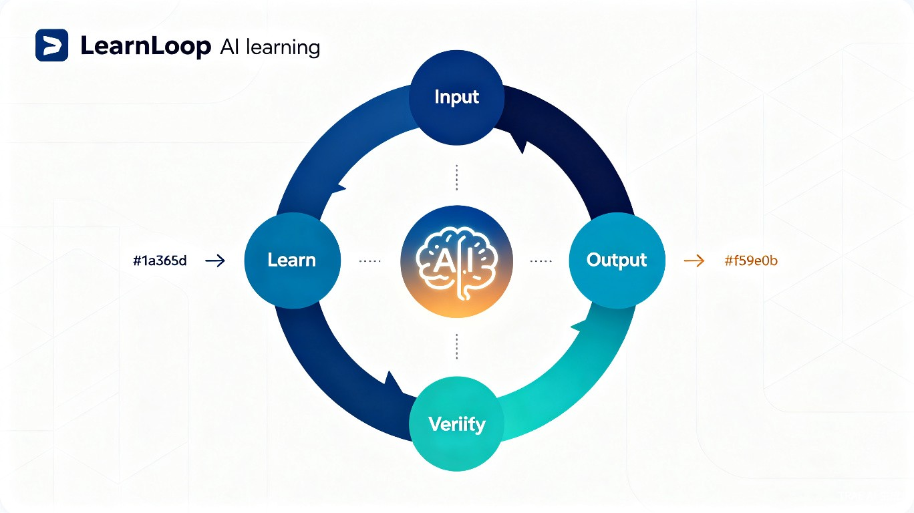

输入 · 学习 · 输出 · 验证 —— AI 驱动的学习闭环平台

大多数人的学习停留在"看过了、记过了"的假性学习状态——书读了不少，合上却讲不出核心逻辑；笔记记了一堆，遇到实际问题依然无从下手。知识来源越来越分散（电子书、视频、公众号、飞书文档、微信读书……），学习者需要在不同平台间反复切换，且缺少一个从"输入 → 学习 → 输出 → 验证 → 再输入"的完整闭环。现有的知识管理工具只管"存"，不管"学会没有"，更不会告诉你哪里还没学会。
好的学习方法有一个共同特征：不能只"输入"，必须通过"输出"和"验证"来检验理解程度，再带着盲区回到"输入"阶段，形成螺旋上升的学习闭环。但现实中，找到听众帮你检验、找到实践机会验证掌握程度，门槛都很高。如果能用 AI 扮演"提问者""听众"和"教练"的角色，自动化完成知识采集、理解检验和输出反馈，就能让这个闭环真正运转起来，变成每个人日常可用的学习方式。
一个本地优先的桌面端智能学习平台（Desktop App），支持 CLI 扩展和 Web 界面，核心是"输入 → 学习 → 输出 → 验证 → 再输入"的完整学习闭环。
LearnLoop 将学习闭环产品化，借鉴费曼学习法"以输出倒逼输入"的核心理念。AI 随时充当提问者，将学习效率提升数倍。自动化的知识采集和智能输出大幅降低从"学到"到"讲出来"的门槛。验证环节发现的盲区会自动重新进入待学队列，形成真正的螺旋上升。
在"终身学习"和"知识创作者经济"双重趋势下，精准服务于内容创作者、以赛代练者、T 型人才和 OPC 工作者等快速增长的人群。用户通过 Learn in Public 将学习过程本身变成内容资产，形成"越学越有影响力，越有影响力越有动力学"的正向飞轮。
参考 Andrej Karpathy 的 LLM Wiki 思路[1]，在用户和原始资料之间建立一个由 LLM 持续维护的知识层。知识被"编译"一次后持续更新，不再每次重新推导。这是一种知识复利工具——将每一次阅读、思考和提问都沉淀为可交叉引用、持续迭代的结构化知识资产。
基于知识库的结构化内容，平台自动构建个人知识图谱，通过分析连通性和覆盖度识别知识短板：
这些短板会自动生成"待补充学习"提示，引导用户有针对性地回到输入端补充资料，形成真正的学习闭环。
flowchart TB
subgraph Input["输入端"]
A1["飞书文档 CLI"]
A2["微信读书 CLI"]
A3["本地文件扫描"]
end
subgraph Learn["学习端"]
B1["划线 & 笔记"]
B2["AI 提问"]
B3["问答题自测"]
end
subgraph Wiki["个人知识库"]
C1["原料库 raw/"]
C2["智能编译 compile"]
C3["知识图谱"]
C4["短板识别"]
end
subgraph Output["输出端"]
D1["语音口述"]
D2["飞书文档生成"]
D3["Remotion 动画"]
end
subgraph Verify["验证端"]
E1["人工反馈"]
E2["待学队列"]
end
Input --> Learn
Learn --> Wiki
Wiki --> Output
Output --> Verify
Verify -->|回炉| Input